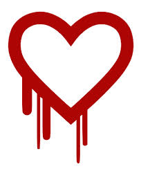

cos'è
HeartBleed
Heartbleed è un bug di sicurezza che si trova nella crittografica open-source, OpenSSL, ampiamente utilizzata per implementare il protocollo Transport Layer Security. Heartbleed è registrato nel sistema Common Vulnerabilities and Exposures con il codice CVE-2014-0160.
I pericoli maggiori per gli utenti della Rete in queste ore potrebbero non derivare solo dalla fine del supporto tecnico da parte di Redmond, ma anche da Heartbleed, un nuovo virus spuntato proprio nel giorno in cui Microsoft ha ufficialmente deciso di mandare in pensione dopo 13 anni il suo sistema operativo di maggior successo.
DUE ANNI IN SILENZIO
Impossibile quantificare quanti siti siano stati compromessi, dal momento che Heartbleed – “Cuore sanguinante” in italiano, termine che gioca sull’espressione Heartbeat, cuore pulsante, usata in gergo per indicare il battito che lega gli utenti ai server -, come sottolinea Nicole Perlroth sul New York Times, opera nell’ombra da circa due anni.
COME FUNZIONA
A identificarlo per la prima volta la scorsa settimana sono stati un ricercatore di Google e un team di esperti di sicurezza finlandesi, Codenomicon, che ha anche creato un sito dedicato (www.heartbleed.com). Il bug Heartbleed si appropria silenziosamente di password, identità, codici fiscali, numeri di conto bancario e carte di credito e permette a chiunque di leggere la memoria di sistemi che usano la versione vulnerabile di OpenSSL e svela le chiavi di sicurezza usate per identificare i fornitori di servizi e crittografare le informazioni che si vuole ottenere.
contromisure
Il bug Heartbleed sta mettendo in apprensione gran parte dei principali siti web, tanto che lo stesso OpenSSL, ossia il sistema di sicurezza usato per la gestione dei dati più sensibili ed importanti che circolano in rete, ammette la falla in questo protocollo di sicurezza. Cosa si rischia adesso con Heartbleed? Tutto ciò potrebbe inficiare la privacy di chiunque abbia un account Facebook, Gmail, YouTube, Yahoo e di tanti altri siti. Informazioni personali, numeri privati, carte di credito, è davvero enorme la mole di dati personali che rischia di essere violata e la rete potrebbe trasformarsi in una sorta di vero e proprio gigantesco Grande Fratello. L’esistenza della falla Heartbleed non è un mistero, ne parla anche il Wall Street Journal, il quale consiglia di cambiare a tutti gli utenti le password dei social e dei siti in cui si gestiscono le mail e farlo in un tempo che sia il più veloce possibile. Ma potrebbe anche non bastare ad arginare i danni di Heartbleed.